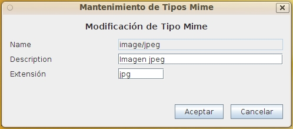

Mantenimiento Tipos Mime
Al seleccionar en el formulario de Lista Tipos Mime las opciones de Alta, Baja, Modificación o Copia de tipos mime aparecerá este formulario con diversos campos activados o desactivados.
Este formulario contiene la información:
- Nombre identificativo: Identificador del tipo mime cuyo valor no puede repetirse ni cambiar una vez asignado. Deberá seguir el estándar (IANA MIME Media Types) de forma que pueda ser interpretado por los navegadores y aplicaciones. Puede tener una longitud máxima de 32 caracteres. (Ej. "application/pdf")
- Descripción del tipo mime: Descripción que permita interpretar el tipo de archivos incluidos. Puede tener una longitud máxima de 128 caracteres. (Ej.: "Archivos PDF, según definición de Adobe e ISO")
- Extensión de los archivos de este tipo: Extensión habitual de los archivos de este tipo (Ej: "pdf", "tiff", "jpg"

Ver: Lista Tipos Mime
Índice Ayuda OpenProdoc